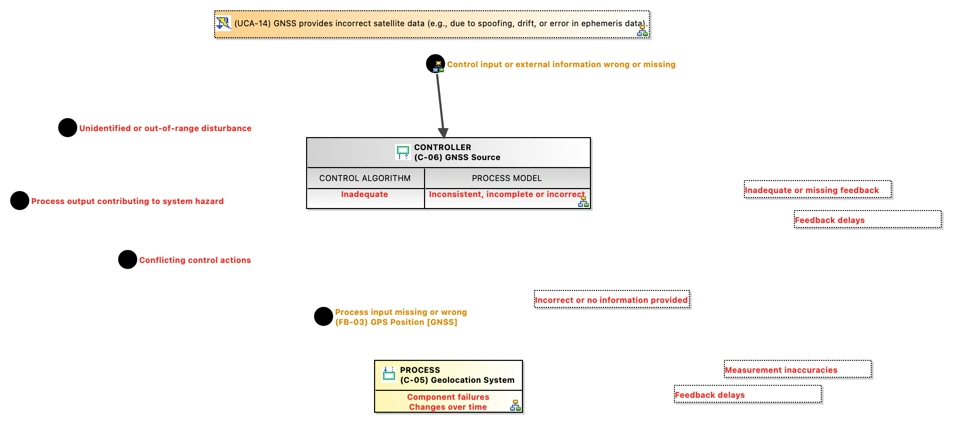

(UCA-14) GNSS provides incorrect satellite data (e.g., due to spoofing, drift, or error in ephemeris data).
UnsafeControlAction
GCAP_NTP241_UNINA > GCAP_NTP241_UNINA > STPA Analysis > Control Structure > (C-05) Geolocation System > Feedback: (C-06) GNSS Source -> (C-05) Geolocation System > (FB-03) GPS Position [GNSS] > (UCA-14) GNSS provides incorrect satellite data (e.g., due to spoofing, drift, or error in ephemeris data).No description.
Content
Loss Scenarios
Causal Factors
Control Action
Violated Constraints
 (SC-03) The drone shall switch to inertial navigation and trigger RTH (Return-To-Home) upon GPS signal loss.
(SC-03) The drone shall switch to inertial navigation and trigger RTH (Return-To-Home) upon GPS signal loss.- (SC-05) Navigation calculations shall be validated against sensor fusion confidence thresholds.
Hazards
Owned diagrams
CFD Causal Factor Diagram of UCA14 GNSS provides incorrect satellite data eg due to spoofing drift or error in ephemeris data

Diagrams displaying "(UCA-14) GNSS provides incorrect satellite data (e.g., due to spoofing, drift, or error in ephemeris data)."
- [CFD] Causal Factor Diagram of UCA-14: GNSS provides incorrect satellite data (e.g., due to spoofing, drift, or error in ephemeris data).
- [CTD] Contextual Traceability Diagram of Loss of Drone
- [CTD] Contextual Traceability Diagram of Wrong GPS Data
- [CTD] Contextual Traceability Diagram of [UCA-14] Control ...